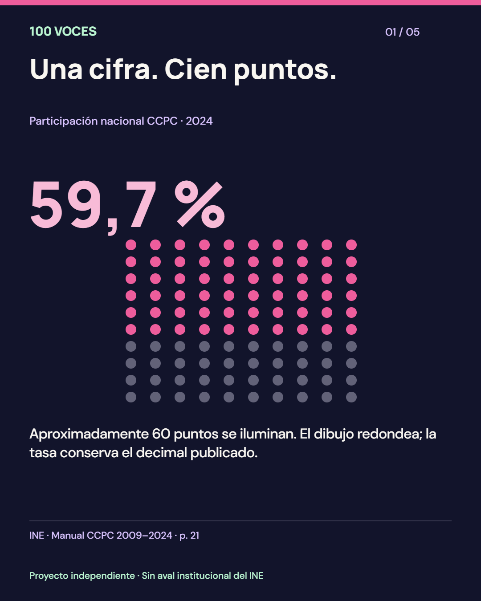
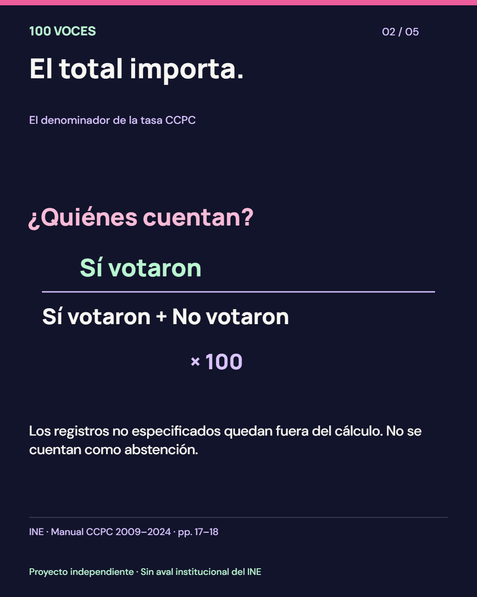
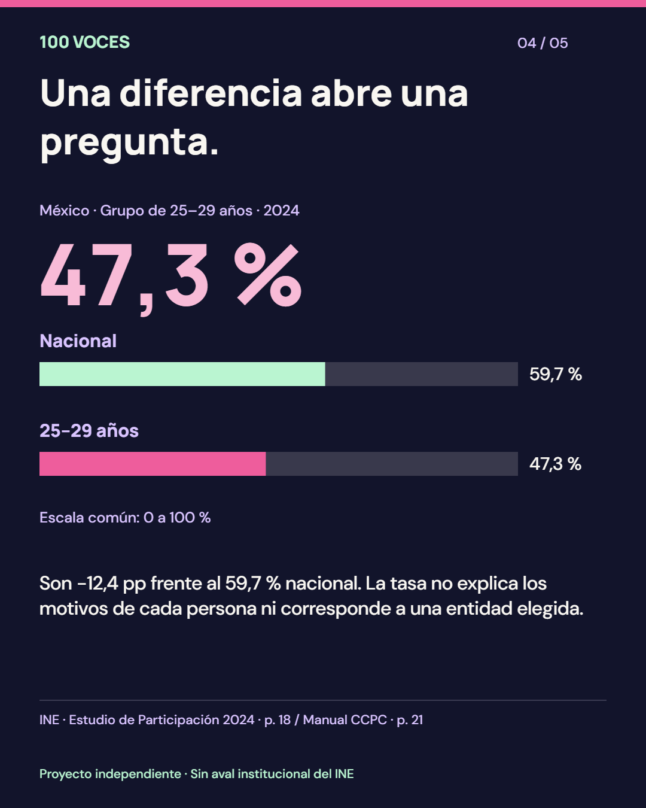

Qué nos dice el dato
Cuánto cambia la tasa entre los años elegidos. La resta se expresa en puntos porcentuales.
Preparando las seis historias…
Votar es intervenir en las decisiones colectivas. Explora cómo participa México y aprende a explicar sus diferencias con evidencia.
Para jóvenes y docentes · Una actividad de 15 minutos
Al terminar podrás explicar un dato, reconocer sus límites y compartirlo con su fuente.
Proyecto independiente · Sin aval institucional del INE
Elige una elección y observa cuántas de cada 100 personas registradas con resultado definido participaron. Cada punto es una representación estadística, no una persona real.
Preparando el dato y su representación.
Los cien puntos representan registros con resultado definido. No equivalen a toda la lista nominal.
Sí votaron: registros con participación identificada. Están en el numerador y también en el total de registros con resultado definido.
Fórmula CCPC. Consulta la definición · pp. 17–18 ↗
Detrás de un porcentaje hay millones de experiencias distintas. El dato describe cuánto ocurrió, no por qué cada persona decidió participar o no.
No es lo mismo una elección presidencial que una intermedia. Comparemos procesos del mismo tipo para contar una historia más precisa.
Escala común de 0 a 100 %. Selecciona una barra para usar ese año como destino.
Cuánto cambia la tasa entre los años elegidos. La resta se expresa en puntos porcentuales.
Por qué cambió ni qué pensaba cada persona. Comparar el mismo tipo de elección ayuda a contextualizar; no elimina todas las diferencias entre procesos.
El promedio nacional reúne realidades distintas. Explora por entidad o por edad: dos formas de mirar la participación sin etiquetar a las personas.
Es una selección heredada del prototipo para ilustrar contrastes. No fue obtenida por muestreo y no representa a todo México. Se conserva porque sus tasas fueron verificadas; ampliar la cobertura requiere cotejar las entidades restantes. Leer criterio y límites ↓
Las diferencias no permiten identificar por sí mismas sus causas. El desglose completo se consulta en la plataforma del INE.
¿Qué información necesitaríamos para comprenderla? Estas cifras no miden los motivos, las barreras ni las opiniones de cada persona.
Selecciona una barra para explorar. Orden por edad, escala de 0 a 100 %.
Grupos publicados en la gráfica 5 del Estudio de Participación Ciudadana 2024, p. 18. Son tasas nacionales; no corresponden a la entidad elegida en la otra vista.
Siete preguntas breves para practicar lectura crítica. Aquí no hay partidos ni candidatos: solo evidencia y pensamiento propio.
Dos escenarios pueden ayudar a hacer mejores preguntas. Compara posibilidades y distingue lo que observamos de lo que solo estamos suponiendo.
Elige dos posibilidades y compáralas con el dato nacional observado. Todos usan el mismo denominador conceptual y una escala de 0 a 100 %.
A y B son supuestos editables. No son pronósticos ni efectos estimados de campañas. “pp” significa puntos porcentuales.
Una evaluación que permita comparar lo ocurrido con lo que habría pasado sin la acción, considerar otros factores y medir la incertidumbre. Mover estos controles solo cambia una cuenta.
Los puntos se redondean; el valor conserva un decimal.
Un recurso educativo de 15 minutos: elegir un dato, compararlo responsablemente y construir una pregunta que no estigmatice a ningún grupo.
15 minutos · Individual o en grupo · Sin cuentas ni datos personales. Necesitas un navegador y papel. Al terminar, cada equipo entrega una afirmación respaldada por un dato y una pregunta que el dato no puede contestar.
Explica los cien puntos y explora quién entra en el denominador.
Compara años del mismo tipo y distingue el ámbito nacional de las edades.
Prueba A/B, responde uno o dos reactivos y comparte una tarjeta con su fuente. Completa los demás después.
Pide explicar por qué 60 puntos representan una tasa de 59,7 %. Después compara 2018 con 2024 y 2015 con 2021. Cierre: resolver una pregunta y compartir una tarjeta con su fuente.
Criterios: distingue tasa y redondeo; resta tasas en puntos porcentuales; reconoce que una diferencia no prueba causas. Respuestas de referencia: −2,7 pp y +4,7 pp.
Facilita una sesión, comparte una secuencia con fuentes o conoce el proyecto en menos de tres minutos.
Actividad de 15 minutos, respuestas, opciones accesibles y protocolo de piloto. No necesitas cuentas.
Guía docente · PDF ↓Kit editable y registro de piloto · ZIP ↓De 59,7 % a una conversación informada. Incluye imágenes 1080 × 1350 y descripciones accesibles.
Descargar carrusel · ZIP ↓Textos y descripciones ↓Recorrido narrado con subtítulos. Montaje de capturas reales y voz sintética declarada.
Descargar pitch · MP4 ↓Presentación · PDF ↓
01 · La cifra y su representación. Fuente: Manual CCPC, p. 21.

02 · El total importa. Fuente: Manual CCPC, pp. 17–18.

03 · Compara con contexto. Fuente: Manual CCPC, p. 21.

04 · Una diferencia abre una pregunta. Fuente: Estudio de Participación 2024, p. 18, y Manual CCPC, p. 21.

05 · Comparte una explicación con fuente.
El piloto está preparado para aplicarse; todavía no hay resultados con personas usuarias. Descarga los materiales antes de una sesión sin conexión.
Los seis datos nacionales proceden del Manual CCPC, p. 21; las ocho entidades, de su tabla de 2024, p. 16. Los 18 grupos de edad provienen de la gráfica 5 del Estudio de Participación Ciudadana 2024, p. 18. Son transcripciones de tasas publicadas, no cálculos desde la base completa.
Manual CCPC oficial ↗Estudio 2024 · participación por edad ↗Plataforma y bases abiertas ↗El CCPC define participación = “sí votaron” / (“sí votaron” + “no votaron”) × 100. No equivale necesariamente a otras tasas calculadas sobre lista nominal total. Los redondeos a 100 puntos son ilustrativos.
Solo utilizamos información agregada y no pretendemos conocer decisiones individuales o sus motivos.
100 VOCES es un proyecto independiente preparado para el Hackathon 2026 del INE. No es un sitio institucional ni representa posturas de la autoridad electoral. No solicita datos de votación ni recomienda partidos o candidaturas.
Base histórica: 2009–2024 · Revisión: octubre de 2026
Tasas publicadas a un decimal: seis años, ocho entidades y 18 grupos de edad de 2024. No se procesó la base agregada completa del CCPC.
Datos y metadatos · JSON ↓Tabla de indicadores · CSV ↓